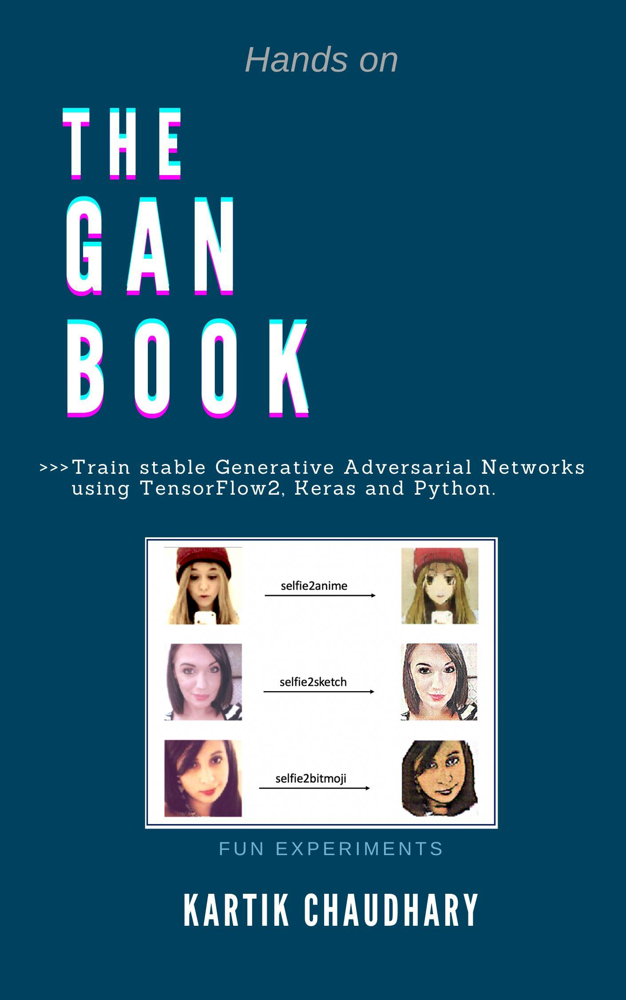
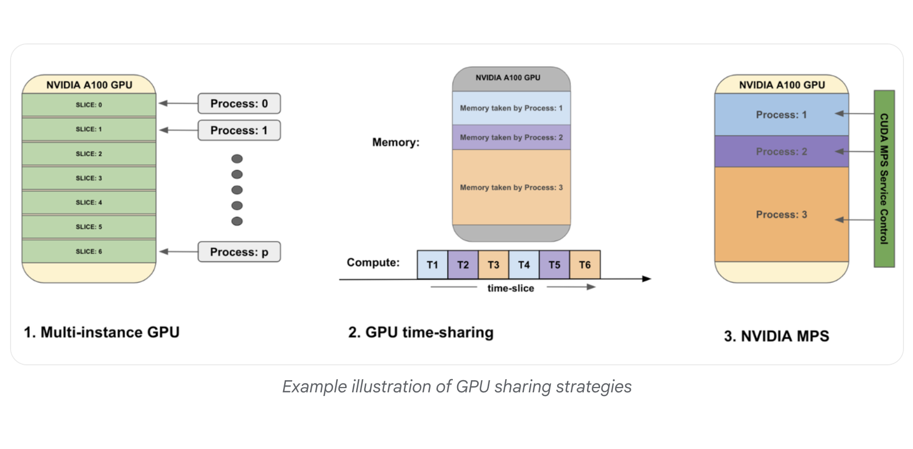
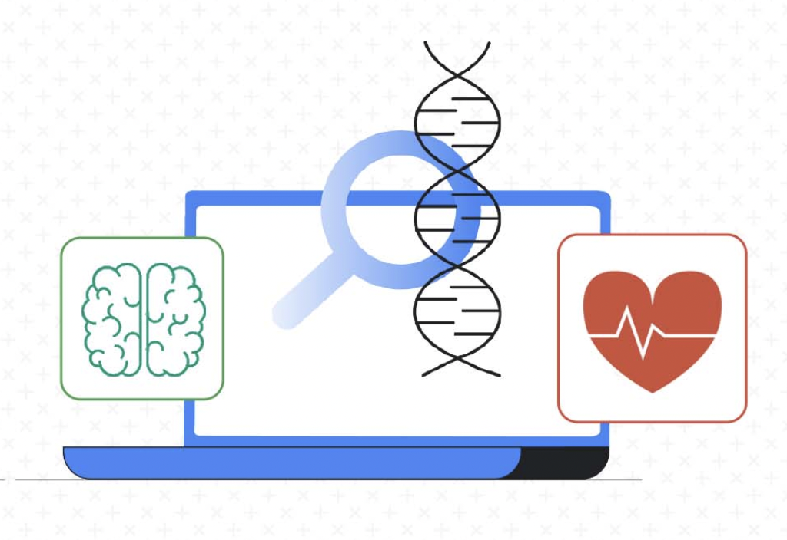
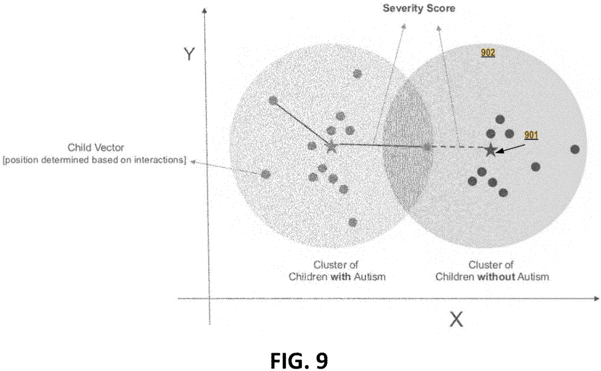
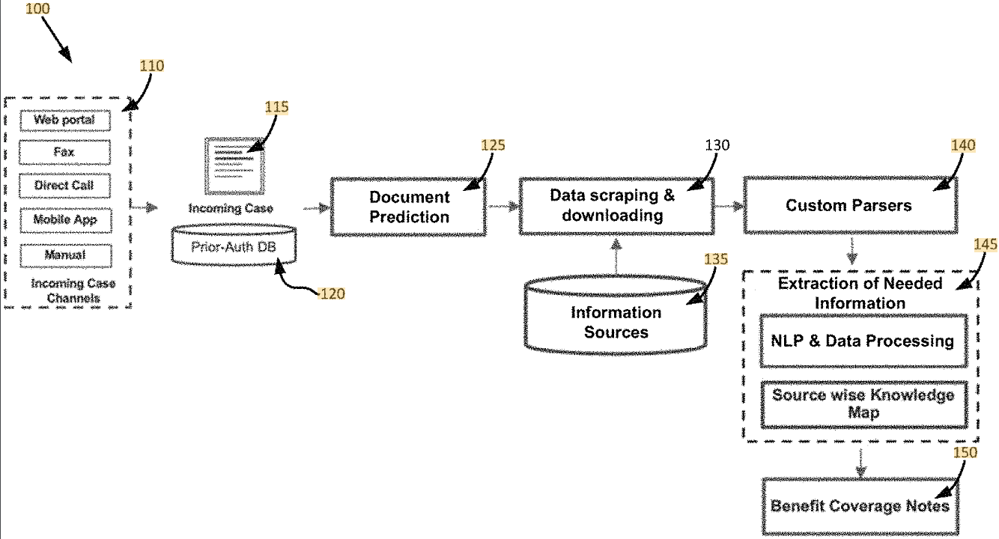
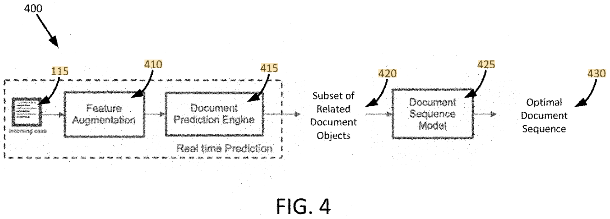
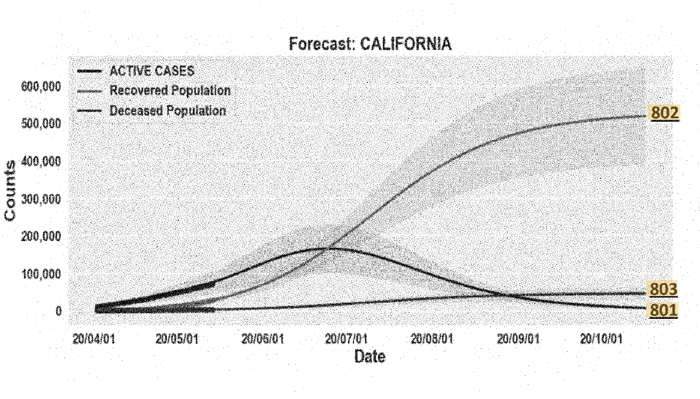
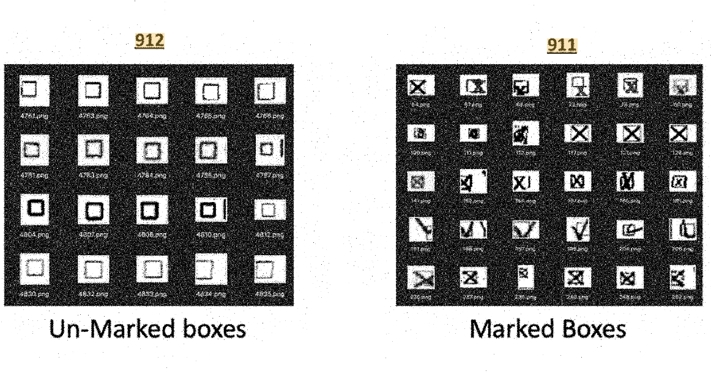
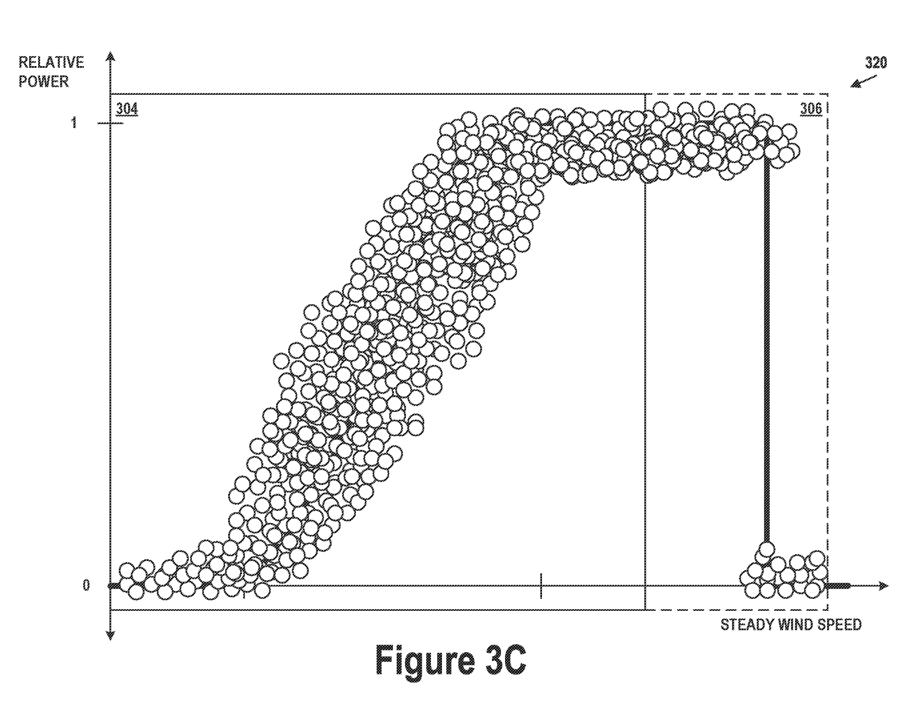
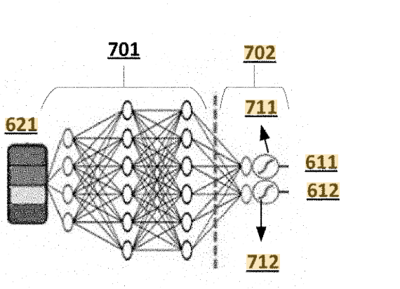

|
I am currently working as a Lead AI/ML Engineer at Google, where I design AI/ML based solutions/products leveraging the advancements in the field of Computer Vision, NLP, GenAI and Machine Learning. I am passionate about learning and inventing new ways of improving ML and DL algorithms to solve real world problems more efficiently. Do checkout my blog on Artificial Intelligence - Drops of AI If you would like to have a 1:1 conversion, buzz me on Topmate! Get in Touch
Topmate (meet me 1:1) /
LinkedIn /
Google Scholar /
Twitter / Quick linksNews | Books | Publications | Patents | Articles |
{kind=link}
News
[2025]: Published a Google Blog on Optimizing image generation pipelines on Google Cloud!
[2021]: Runner’s Up, Global Data Science Hackathon, Optum! |
Books |
|  |
Kartik Chaudhary Amazon, 2024 If you are a ML practitioner who wants to learn about generative learning approaches and get expertise in Generative Adversarial Networks for generating high-quality and realistic content, this book is for you. Get your copy (Amazon Kindle)! Get your copy (Google Play Books)! |

|
Kartik Chaudhary, Jasmeet Bhatia. Amazon, 2024 If you are a machine learning practitioner who wants to learn end-to-end ML solution development on Google Cloud Platform using MLOps best practices and tools offered by Google Vertex AI, this is the book for you. Get your copy! |
{kind=link}
PublicationsMost of my research projects are related to computer vision, optical character recognition, image processing and video processing. |
|  |
Kartik Chaudhary, Gopala Dhar, Akhil Sakarwal, Ashish Tendulkar, Abhijat Gupta, Suraj Kanojia Goolge AI Blog, 2025 Optimizing image generation pipelines through hardware, code, and pipeline improvements boosts performance, cuts costs, and enhances user experience without sacrificing image quality. publication |
|  |
Sharmila Devi, Kartik Chaudhary, Nitin Aggarwal, Gopala Dhar, Durga Tulluru, Praful Turanur and Apollo Team. Goolge AI Blog, 2022 Clinical Decision Support System (CDSS) is an important technology for the healthcare industry that analyzes data to help healthcare professionals make decisions related to patient care. publication |

|
Kartik Chaudhary, Raghav Bali Arxiv, 2022 Easter2.0 is a small/fast convolutional model for the task of OCR/HTR that works well even when labelled data is limited. paper | code |

|
Kartik Chaudhary, Raghav Bali CAIAC, 2021 Easter is a small/fast fully convolutional model for the task of OCR/HTR. paper | code |
{kind=link}
{kind=link}
Patents |
|  |
US11663790B2 Granted, 2023 |

|
V Kishore Ayyadevara,
Nilav Baran Ghosh,
Yeshwanth Reddy,
Vineet Shukla,
Kartik Chaudhary
US11227153B2 Granted, 2022 |
|  |
US12050650B2 Granted, 2024 |
|  |
US11508171B2 Granted, 2022 |
|  |
US20210358640A1 Application, 2021 |
|  |
US20210326631A1 Granted, 2024 |
|  |
WO2024097438A1 Published, 2024 |
|  |
US20230134348A1 Published, 2023 |
|
|